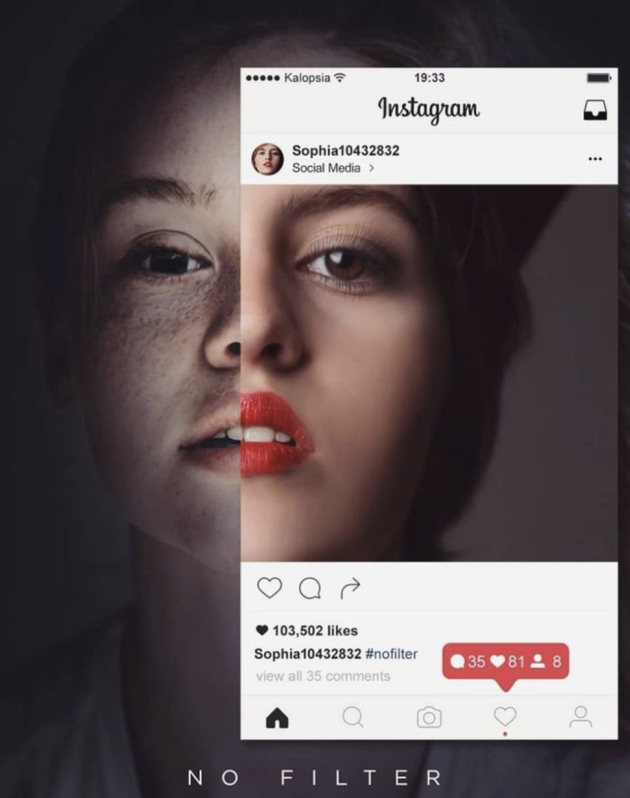
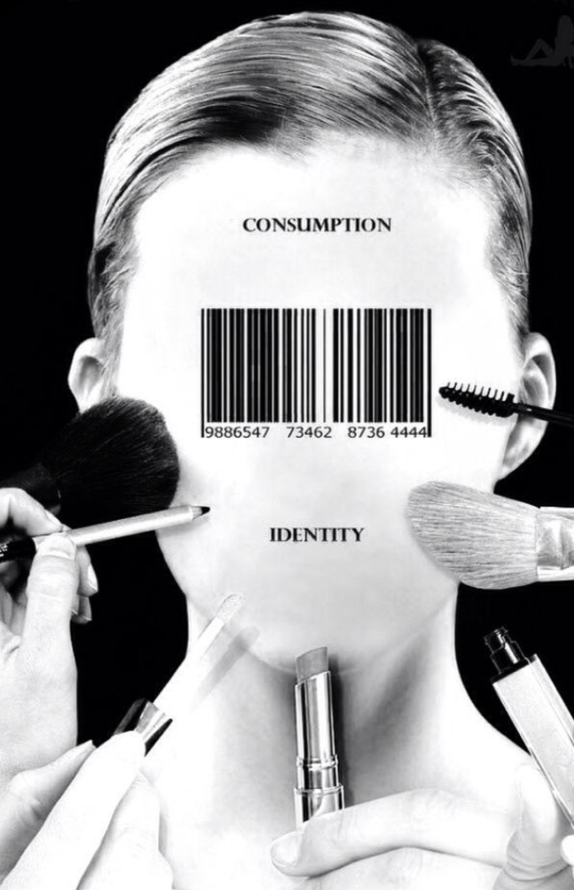
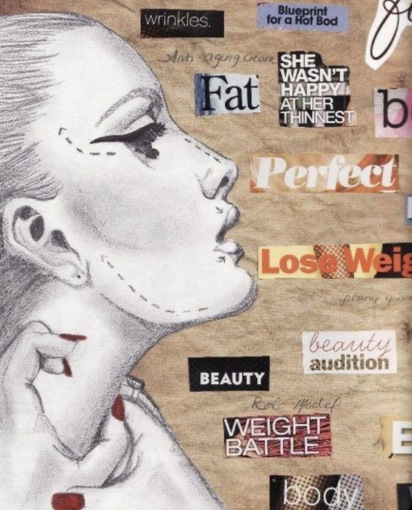

Negative aspects of Social Media... ):
Social Media creats a set of standards that some users try to meet. Most of the time these standards are not possible for the average person.
Celebrities do many brand deals in which they get paid to post something on the platform promoting the brand. This can lead to misleading information regarding the products being shared becuase the celebrities want to make money.
People are able to hide behind a profile which they can use to spread hate and unkind words to people.
The number of likes and followers that someone has on their profile can be used as a social "ranking" and can also discourage people from sharing what they want on the platform.
Every platform has a set grid or way to display the posts. This takes away some creative freedom when it comes to personalizing your account.
Many platforms have restrictions and guidlines on what can and can not be posted.



People an form negative opinons on you or your beliefs because of what you post or who you follow.
Social media can consume a lot of time in someones day to day life. People spend too much time on these platforms looking at what other people are doing.
These platforms can be dangerous becuase it shows your followers where you are at an exact moment in time. There have been many instances of robbery and homoside due to information being leaked on the media.
Many rumors and lies can be spread through social media at a fast rate.
Not every person on these platforms has a true idenity and good intentions. Many people are trafficed and stalked through social media.
People can show an unauthentic version of themselves through editing and effects. This can alter someones appearence.